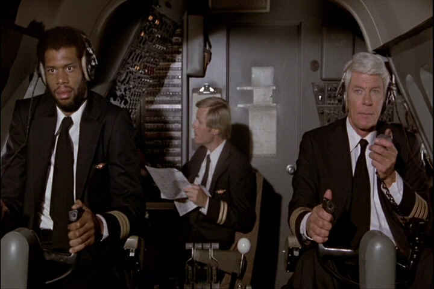

| Airplane! (SE)/B,B+ |
| Paramount/1980/87/ANA 1.85 |
The Zucker Brothers and Jim Abrahams must have one of the busiest kitchens you've ever seen. Airplane!, their breakthrough kamikaze comedy fills the screen sink with every imaginable joke in an extended skit that that drives through gale force laughter to a safe landing.
 |
|
The cracked crew of the cockpit. ©Paramount. |
Airplane! is a send up of Zero Hour, a pre-Airport airborne disaster film based on an Arthur Hailey TV drama. But the Airplane! crew borrows material to spoof from every place ripe for broad satire, from the halls of Knute Rockne All American to the shores of the Marx Brothers, bending, borrowing and sending into the air with delightful abandon.
There's plenty of humor that was timely in 1980 and is lost on audiences today, but when your joke basket is overflowing you can get away with it. In fact, the gags run often run together so furiously that it takes many viewing to catch them all. Background details frequently passed by the first time supply laughter the second or third time around. Keep a sharp eye out for irreverent signage or background
characters.
Stars Robert Hays and Julie Hagerty never achieved the same levels of career success as they did playing the failed fighter pilot Ted Striker and saccharine stewardess Elaine Dickinson in Airplane! and its sequels. Other players fared better. Leslie Nielsen ignited a new comic career with his wacky Doctor Rumack joining the Airplane! crew for their Naked Gun send-ups. Lloyd Bridges shows off
a comic ability never before tapped and Robert Stack plows ahead with magnificent deadpan.
Paramount extracts the most out of the raw Airplane! elements delivering a colorful, mostly sharp, transfer, with only one scene noticeably marred by minor compression artifacts on a white shirt. There are very few age related problems. Some excessive grain shows up here or there. The image is always sharp enough to reveal the hokey special effects. I though I noticed color
bleeding a couple of times, but if anything it was minor. The re-mix to Dolby Digital 5:1 adds a few ambient flourishes, and perhaps the prop engines that never were are slightly more prominent in this new mix.
The Zuckers, Abrahams and Davidson are wild on the audio commentary. You an idea of what the brainstorming sessions were like when these guys made their zaniest movies, like Airplane! and The Naked Gun. They are having too good a time at times. and often their laughter or overlapping comments drown each other out, so you miss some of the
jolly observations. The reminiscences include writing the scene when the boy comes into the cockpit and using giver the pilot the line "Have you ever ......." You'll have to listen to the commentary to find out what the line was since it was swiftly deleted from all drafts. Gladiator movies anyone?

Selections from the feature archive include articles on Akira Kurosawa, Frank Darabont, Blonde Bimbos, Hollywood Street Gangs, or Vietnam: The Hollywood Pariah, and many more....
Sturges Emerges
Preston Sturges was Hollywood's resident comic genius for more than a decade. His movies are timeless. Click on his image to read all about it.
The Movie Poster Archive includes extensive poster images from the films of stars like Susan Hayward, Kirk Douglas, Katharine Hepburn and many more. Our featured star is Cary Grant.


DVDPlanet is the DVD incarnation of legendary laser retailer Ken Crane's. Deep discounts and serious service.
 Direct from the corridors of the Home Theater Forum, Home Theater Talk is the newest place on the Net to discuss everything home theater. Friendly atmosphere and knowledgeable folks are the secret ingredients.
Direct from the corridors of the Home Theater Forum, Home Theater Talk is the newest place on the Net to discuss everything home theater. Friendly atmosphere and knowledgeable folks are the secret ingredients.
 ETEKnet is the web's only 24-hour, totally FREE source for all your home theater, DVD, Dreamcast, PC, and Networking tech
support needs!
ETEKnet is the web's only 24-hour, totally FREE source for all your home theater, DVD, Dreamcast, PC, and Networking tech
support needs!

Need a daily fix of movie quotes. Reel Quotes Newsletter has the answer. Click on the Reel Quotes symbol for more.